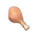

Sweet Madame
How To Obtain: Available by default
Type: Recovery Dishes
Region: Mondstadt
Description: Honey-roasted fowl. The honey and sweet flowers come together to compliment the tender fowl meat.
Effect: Restores 22% of Max HP and an additional 1,200 HP to the selected character.
Ingredients:
2 
2